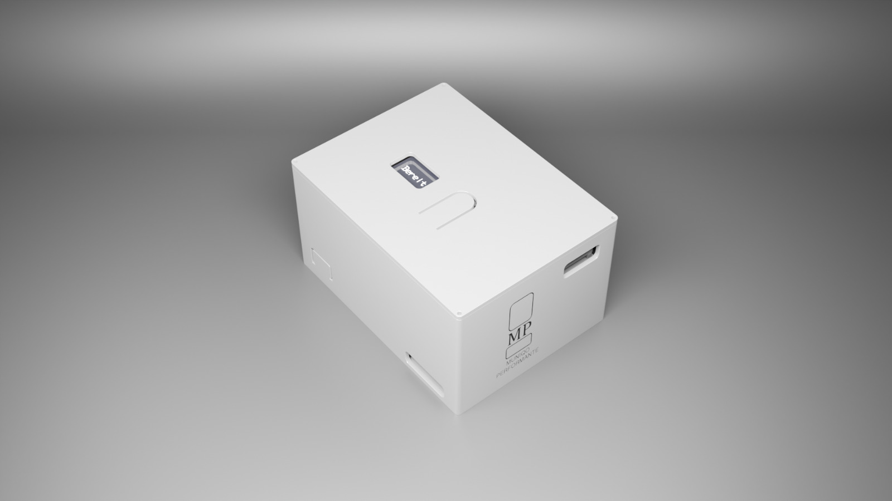

Die Zukunft der Vibrationsmessung.
Hochwertiger 3-Achsen-Beschleunigungssensor für rauschfreie Messungen bis 1000 Hz mit hoher Stoßfestigkeit.
Über 24 Stunden kontinuierliche Aufzeichnung und 32 GB interner Speicher für saubere Datenaufnahmen.
Integriertes GPS ermöglicht synchronisierte Vibrationsmessungen und routenbasierte Auswertung.
FFT-Analyse, Spitzenwert-Erkennung und Geschwindigkeitsauswertung in einer modernen, intuitiven Oberfläche.
Entdecken Sie die wichtigsten Komponenten und die fortschrittliche Technologie von VibraSense.
Zeigt den aktuellen Systemstatus klar und intuitiv.
Das Gerät lässt sich mit nur einem Knopfdruck ein- oder ausschalten.
SD-Karte für Protokollierung und Backup von Vibrationsdaten einlegen.
Zum Laden und Übertragen von Daten.
Messung effizient starten oder beenden.
Vibrationsdaten schnell und genau aufnehmen.
Daten nahtlos für den sofortigen Zugriff übertragen.
Daten schnell mit automatisierter Analyse auswerten.
Detaillierte, teilbare Berichte generieren.
Übermäßige Vibrationen im Fahrzeug reduzieren Komfort, können Bauteile beschädigen und die Sicherheit beeinträchtigen.
Ungewöhnliche Vibrationsmuster weisen auf Defekte wie Unwucht, Fehlausrichtung oder Lockerungen hin, die zu Ausfällen führen.
Stabile Vibrationsintensität sorgt für Produktionsgenauigkeit und Qualität, verhindert Defekte und optimiert Prozesse.